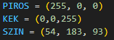
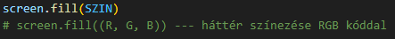
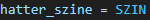
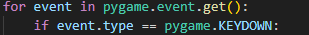
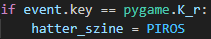
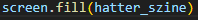

Színeket tudunk constansok segítségével RGB kóddal meghatározni, de vannak alap színek is.
piros = (255, 0, 0) --- A zárójelbe akár beírhatjuk az alapszíneket is ('yellow') formában
Ezen színek felhasználásával ki tudjuk tölteni a játékablakunk. Ezt háttérszínnek szokták használni.
screen.fill(SZIN)
Végül, ezt a színt meg tudjuk változtatni gomblenyomásra. Ehhez 4 lépés kell:
1. Létre kell hoznunk egy változót, amelyet meg tudunk majd változtatni.
2. Megkeresni azt az eventet, amikor egy billentyűt lenyomsz.
3. Kiválasztani, hogy melyik gomb lenyomásakor milyen színű legyen a háttér.
4. Az 1. pontban létrehozott változót a screen.fill()-be beírni.
